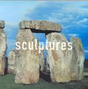

| Artist: | Heartscore |
| Title: | Sculptures |
| Label: | COS Records hscd0201 |
| Length(s): | 44 minutes |
| Year(s) of release: | 2003 |
| Month of review: | [12/2003] |
| 1) | Men Treats Woman | 4.03 |
| 2) | Blue Bayou | 4.28 |
| 3) | All I Want Is You | 5.00 |
| 4) | When Sue Wears Red | 2.42 |
| 5) | Aunt Sue's Stories | 6.06 |
| 6) | The Saddest Noise, The Sweetest Noise | 5.20 |
| 7) | Judgement Day | 2.50 |
| 8) | Little Julie | 3.07 |
| 9) | What If | 4.14 |
| 10) | John Evereldown | 6.49 |